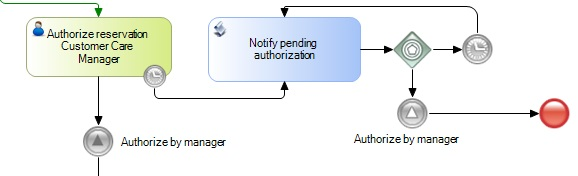

The Timer Intermediate Event adds time-based dependencies to a process. It is either inserted into the sequence flow to create a delay or attached to an activity to create a deadline or "time-out" condition.
When a token (process instance) arrives at this Event, the clock starts, and the token waits for the specified time-related condition to occur.
The diagram below shows how to set periodic notifications. The Timer Intermediate Event attached to the Authorize reservation Customer Care Manager will be activated once a certain time has passed. Next, the flow will continue to the Notify pending authorization script which will send a message to the Manager, notifying him about the pending task.
To implement an infinite loop a Gateway Event and another Timer are necessary, connected as shown in the diagram. This loop must be stopped after the Manager has finished the task; the throwing Signal Event connected to the task manager and the catching Signal Event connected to the Gateway whose flow continues to a None End Event will do this.
Note that to see the Timer Events reflected in your inbox, you must run a program that checks and executes these events. See Timer Control for more information.

Timer Start Event in BPD
Timer Control